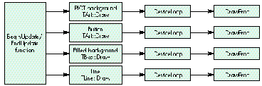
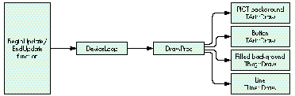
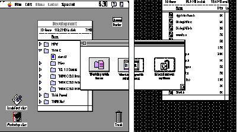

With the ascendancy of multimedia, 3-D shading and elaborate color backgrounds are
showing up in an increasing number of interface designs. But what happens when these
sophisticated interface elements must be displayed across multiple monitors of
different bit depths? This article explains how to use the DeviceLoop function to take
care of the device, clipping, and bit-depth logistics involved in multiple-monitor
displays.
One of the great things about the Macintosh is its ability to support more than one
monitor at a time. You can display windows in any active monitor or split a window --
and the objects in it -- across several monitors at once. What's more, you can make an
image adjust to the bit depth and other capabilities of each monitor it's displayed on, so
that the visual interface looks as good as it possibly can on each of the devices attached
to the computer.
I recently worked on a project in which one of the goals was exactly that -- we wanted
our application windows to look really good across multiple monitors and at any bit
depth. The task was complicated by the fact that the interface was quite sophisticated
graphically. To give our windows a distinctive, three-dimensional look, we used shaded
color graphics. We filled the content area with background graphics, text, patterned
and colored lines, and 3-D buttons. With the exception of our standard List Manager
lists, all the window objects were drawn by our application program. Even the
conventional scroll bar, close box, and zoom box were replaced by custom art drawn
by the application, not the Window Manager.
Displaying these complex windows across multiple monitors was obviously going to be
a challenge. We knew that the Finder, for example, pulled it off -- whenever Finder
windows span monitors of different bit depths, the parts of the window on each monitor
are drawn to the individual monitor's depth. "If the Finder does it, so can we," I
decided, although I actually knew very little about how to solve the problem.
I bit the bullet. The search for ways to draw a window across multiple monitors led in
a number of directions, all of them involving visible regions, clipping regions, and
region-rect conversions. I asked a lot of people for advice, and while everyone was
gracious in offering help, the job was looking complicated. Fortunately, one of the
advice givers suggested that I check out the DeviceLoopfunction inInside
MacintoshVolume VI. (I found out later that the advice giver was the author of the
DeviceLoop function.)
When I looked up DeviceLoop in Volume VI, here's what I found: The DeviceLoop
procedure searches all active screen devices, calling your drawing procedure
whenever it encounters a screen that intersects your drawing region. You supply a
handle to the region in which you wish to draw and a pointer to your drawing
procedure. . . . If the DeviceLoop procedure encounters similar devices -- having the
same pixel depth, black-and- white/color setting, and matching color table seeds -- it
makes only one call to your drawing procedure, pointing to the first such device
encountered.
This sounded exactly like what we were looking for. The Window Manager itself uses
DeviceLoop to display window components on a variety of monitors. Since we were
drawing our own windows, DeviceLoop was clearly what we needed.
Here's what DeviceLoop looks like in C:
pascal void DeviceLoop (RgnHandle drawingRgn, DeviceLoopDrawingProcPtr drawingProc, long userData, DeviceLoopFlags flags);
The drawingRgn parameter is a handle to the region that will be drawn in (usually a
window's visRgn). The drawingProc parameter is a pointer to your drawing routine
(see below). The userData parameter is a long that gets passed to your drawing
routine. Finally, the flags parameter controls how devices are grouped before your
drawing routine is called. (Pass 0 for the default behavior -- grouping similar
devices together. See the description inInside Macintoshfor other possible values.)
The drawing routine needs to be declared as follows:
pascal void MyDrawProc (short depth, short deviceFlags, GDHandle targetDevice, long userData);
Here the depth parameter is the depth of the device you're currently drawing on. The
deviceFlags parameter is a copy of the device's gdFlags, targetDevice is a handle to the
device, and userData is whatever you passed to DeviceLoop.
DeviceLoop works like this: Each time your drawing routine is called, the current
port's visRgn will have been set to the intersection of your drawing region and some
screen device. DeviceLoop passes the drawing characteristics of the particular screen
it's working on to the drawing routine, which can then make use of them -- for
instance, by drawing to the appropriate bit depth. In short, DeviceLoop takes care of
all the device, clipping, and bit-depth logistics, while all you have to do is draw.
In our application, we had to draw not only the contents of the window, but also the
window itself. True to our object-oriented design, we created classes for all the
interface objects. These classes included a TArt class for backgrounds, graphics, and
3-D button objects; a TLine class for lines; a TTxt class for black-and-white text; and
a TBkg class for backgrounds for the text. Although we used DeviceLoop for drawing
objects in every class except the text classes, the heart of the process is best
illustrated by our use of DeviceLoop for TArt objects.
The graphics for TArt objects were stored as PICT resources. To give the best possible
image, the interface designer created an 8-bit-deep PICT for display depths of 8 bits
or deeper. For all other display depths and CPUs without Color QuickDraw, she created
a 1-bit-deep, black-and-white PICT. We could have let the Macintosh use the 8-bit
PICT for all drawing -- color and black-and- white -- and, with dithering, the
results would have been pretty good. But since we had our own hand-designed, 1-bit
version of the PICT, DeviceLoop was a better solution. Our window object kept track
of all the interface objects that it needed to draw. When an update event was received,
the document object told the window object to draw. Specifically, our
BeginUpdate/EndUpdate function called a particular drawing routine for each of the
objects. Each object, in turn, called DeviceLoop with our DrawProc callback, which
contained the actual drawing code for that object. Figure 1 shows this strategy.

Figure 1 An Inefficient Way to Incorporate DeviceLoop
We used this DeviceLoop-within-each-object's-drawing-procedure approach until
someone pointed out how inefficient it was to call DeviceLoop for every interface
object. We realized that it would be much better to call DeviceLoop once and have the
drawing procedure that we passed to it decide which object had to be drawn. We wound
up with a single DeviceLoop call in the window's BeginUpdate/EndUpdate function, as
shown in Figure 2. The use of a single DeviceLoop call in the window object really
streamlined the design.

Figure 2 A Better Way to Call DeviceLoop
One problem we encountered was that the compiler balked whenever we referenced our
drawing routine (called DrawProc) in the DeviceLoop parameter list. We even
included the scope -- TWin::DrawProc -- and that didn't help. The breakthrough came
when we made DrawProc static. Unfortunately, changing it to static caused another
problem: the compiler choked when we referencedthis within DrawProc. We forgot
that static functions can't reference nonstatic member variables. (You C++ aficionados
are probably smiling, but we recent converts must struggle at first.) We couldn't use
static variables, however, because each of our objects required its own variables.
Thus, to access an object's variables, we had to pass the window object pointer in the
userData parameter of the DeviceLoop function.
The Developer CD Seriesdisc contains a sample application that shows how we used
DeviceLoop for TArt objects in our interface. The application, DeviceLoopInDrag,
displays a window that can be dragged between monitors of different bit depths. Figure
3 shows this window spanning a grayscale and a black-and-white monitor.
Excerpts from the DeviceLoopInDrag source code follow. First there's the update
function that's called whenever the window needs to be redrawn. It just calls the
drawing procedure for the window object (TWin).

Figure 3 DeviceLoop in Action
// TDoc::DoUpdate
// Document object.
// Entry for update event action.
void
TDoc::DoUpdate()
{
BeginUpdate(this->fDocWindow);
this->fWinObj->Draw();
EndUpdate(this->fDocWindow);
}
The window's drawing procedure does little more than set up and call DeviceLoop.
Notice that we're passing the reference to the current window object --this -- in
DeviceLoop's userData parameter, as described earlier. Since we want the default
DeviceLoop behavior, we set the flags to 0.
// TWin::Draw
// Window object.
// Within BeginUpdate/EndUpdate.
void
TWin::Draw()
{
// Have DeviceLoop manage the drawing.
// Pass the window object in userData.
long userData = (long)this;
DeviceLoopFlags flags = 0;
GrafPtr myPort;
GetPort(&myPort);
DeviceLoop(myPort->visRgn, TWin::DrawProc, userData, flags);
// Draw the stuff we don't need DeviceLoop for.
// We tell the subview to take care of that.
this->fView->Draw();
};
Next, theTWin drawing procedure is the callback procedure that DeviceLoop invokes to
coordinate the drawing of each of the elements on the screen.
// TWin::DrawProc
// Called by DeviceLoop.
// A static function. Must be in a resident segment, locked and
// unpurgeable. Because it's static, it can't access object member
// variables directly. We use the window object passed in userData
// to access its member variables.
#pragma segment Main
pascal void
TWin::DrawProc(short depth, short /*deviceFlags*/,
GDHandle hTargetDevice, long userData)
{
// Get the window object from userData.
TWin* theWinObject = (TWin*) userData;
// Use depth of 1 if we have a computer without Color QuickDraw.
depth = (hTargetDevice==NULL)?1:depth;
// Draw our objects.
theWinObject->fBackground->Draw(depth);
theWinObject->fLogo->Draw(depth);
theWinObject->fText->Draw(depth);
theWinObject->fButton->Draw(depth);
};
Finally, here's the actual TArt::Draw function, used for various items in the window.
Based on the bit-depth parameter passed to it, the Draw function decides whether to
use the black-and-white or the color version of its PICT.
// TArt::Draw
// All art objects (PICTs) are drawn here. This is where we
// distinguish between B&W or color renderings of TArt objects.
// The B&W rendering has a resource ID that's kBWOffset larger
// than its color counterpart value.
void
TArt::Draw(short depth)
{
// Don't draw empty art.
if(this->fPictID==0)
return;
PicHandle hPict;
if(depth<8)
{
// Use B&W PICT.
hPict = (PicHandle) GetResource('PICT',
this->fPictID+kBWOffset);
}
else
{
// Use color PICT.
hPict = (PicHandle) GetResource('PICT', this->fPictID);
}
if(hPict)
{
Rect theDrawRect;
this->GetDrawRect(theDrawRect);
HLock((Handle) hPict);
DrawPicture(hPict, &theDrawRect);
HUnlock((Handle) hPict);
}
};
How did we wind up feeling about DeviceLoop? After we first discovered it, our
tendency was to use it everywhere. We even used it to call a drawing routine that
always drew in black and white, no matter what the bit depth. We later stripped this
use out of the interface because it offered no advantage and added extra code.
One concern we had was that performance would degrade to an intolerable level as we
added objects to be drawn. To see what would happen, the mischievous test engineer for
our project devised a case with 99 separate TArt objects in the same window.
Predictably, the 99 objects weren't displayed all at once. While you can expect some
lag between the appearance of first object in a window and the last, however, the
drawing time when you use DeviceLoop is really very short, well within user
tolerance.
All in all, our design team was very pleased with DeviceLoop. We were glad to have
found such an easy way to solve the problem of displaying interface objects on
monitors of different bit depths. The interface designer got the look she wanted, and we
were able to accomplish the job with a minimum of hassle and a minimum of code. This
was one challenge that left everyone happy.
JOHN POWERS (AppleLink JOHNPOWERS) started his career as a behavioral
scientist, studying how people use computers. He worked his way up the management
ladder, and then cofounded a company that developed software for the first home
computers. That lead him to Atari, but Atari got weird, so John joined Convergent
Technologies to develop the WorkSlate notebook computer, eight years before the
PowerBook. That led him to another management ladder and into The Learning
Company, where he developed software for children. Locked in his management office,
John discovered the Macintosh and decided to become a Macintosh software developer.
Now he's at Apple Computer developing Macintosh software that helps people use
computers. *
The DeviceLoop call first appears in System 7. If your application will be
running under an earlier version of system software, you'll need to implement your
own DeviceLoop function. For an example of how to do this, see the column "Graphical
Truffles: Multiple Screens Revealed" in Issue 10 of develop.*
THANKS TO OUR TECHNICAL REVIEWERS Edgar Lee and Brigham Stevens.
Special thanks to Pat Coleman, the Interface Designer on the project that inspired this
article.*